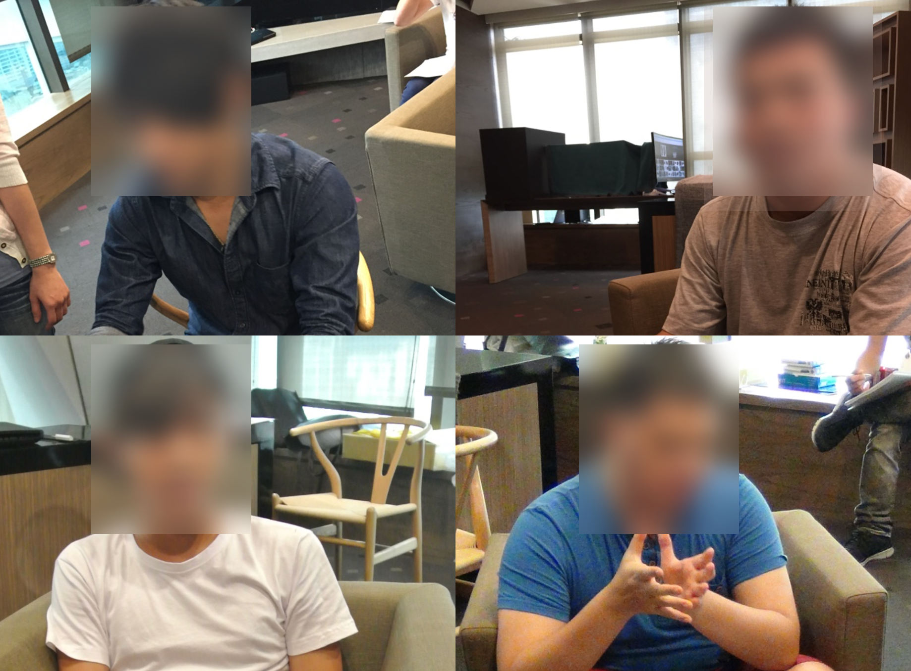

PredatorSense 遊戲控制中心
為電競玩家打造的強大系統管理工具
情境 (Situation)
在電競筆電市場中，硬體效能固然重要，但如何讓玩家能夠輕鬆掌控這些效能，並獲得最佳遊戲體驗，是產品差異化的關鍵。2018年時期的市場調查顯示，當時的控制中心軟體普遍存在以下問題：
這些問題導致玩家難以發揮硬體的全部潛能，影響整體遊戲體驗，也使得電競筆電的性能優勢無法完全展現。因此，開發一個直觀、易用且功能完整的遊戲控制中心，成為提升產品競爭力的關鍵。
任務 (Task)
為 Acer 電競筆電開發一個直觀、功能完善的系統控制中心，讓玩家能輕鬆調整硬體效能、監控系統狀態並優化遊戲體驗。
專案目標
我的角色與職責
行動 (Action)
1. 腦力激盪與概念設計
先收集公司內部Gamer的想法，並實際產出可以互動的設計雛形：

2. 使用者研究與概念驗證
進行玩家訪談與焦點團體，確保設計符合玩家的實際需求：

研究員找來玩家，並進行1對1訪談，針對概念設計進行提問
當天結束後，大家會把紀錄的內容貼在表板上，並進行彙整
3. 需求定案確認最終設計
從使用者研究中，篩選出有感的功能進行設計與規劃，最終交付視覺設計師進行最終畫面設計：

結果 (Result)
PredatorSense 成功為 Acer 電競筆電打造了一個強大的系統管理工具，成為產品線的重要差異化優勢：
iF 設計獎
2018年榮獲德國iF設計獎，肯定其創新設計與使用者體驗
全球市場
產品覆蓋全球六大洲，服務超過100個國家的電競玩家
使用者體驗
透過焦點團體研究，打造直覺且視覺效果出色的介面設計